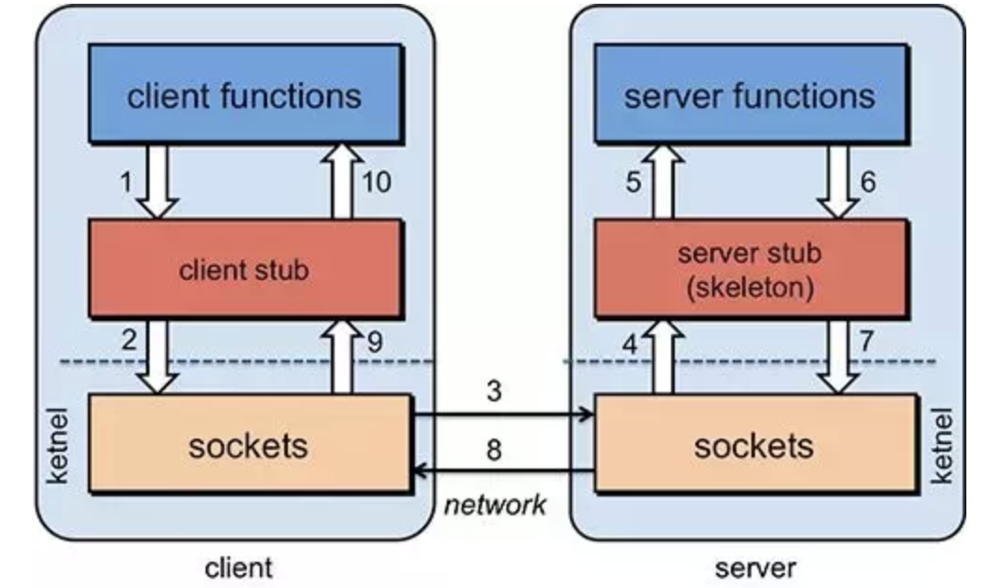
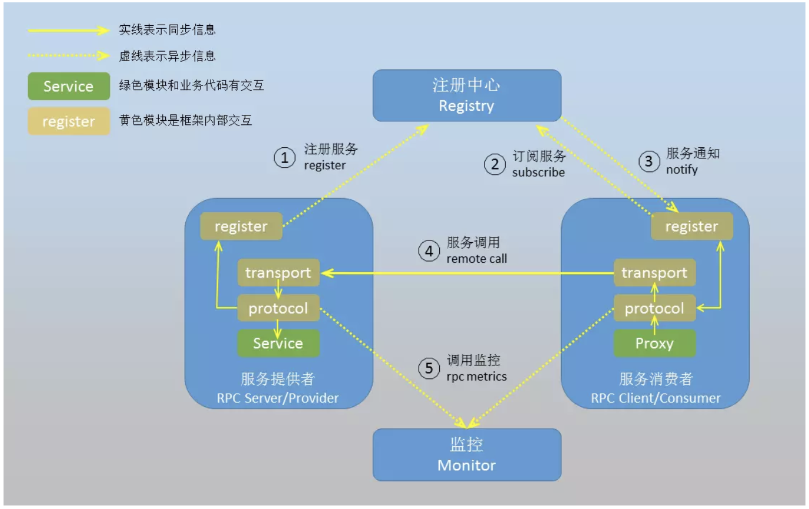

网络掩码又叫子网掩码、地址掩码”、子网路遮罩(subnet mask)，它是一种用来指明一个IP地址的哪些位标识的是主机所在的网络地址以及哪些位标识的是主机地址的位掩码。子网掩码不能单独存在，它必须结合IP地址一起使用，它的作用就是将某个IP地址划分成网络地址和主机地址两部分。(IPv6中没有子网掩码的概念，也没有网络号与主机号的概念)
彩虹表
一、概念
彩虹表是一个用于加密散列函数逆运算的预先计算好的表，为破解密码的散列值(或称哈希值、微缩图、摘要、指纹、哈希密文)而准备，是马丁·赫尔曼早期提出的简单算法的应用。 。一般主流的彩虹表都在100G以上，这样的表常常用于恢复由有限集字符组成的固定长度的纯文本密码。这是空间/时间替换的典型实践，比每一次尝试都计算哈希的暴力破解处理时间少而储存空间多，但却比简单的对每条输入散列翻查表的破解方式储存空间少而处理时间多。使用加salt的KDF函数可以使这种攻击难以实现。
二、背景
为了保证后台数据安全，现在的做法都是使用哈希算法对明文密码进行加密后存储。由于哈希算法不可逆向，因此由密码逆向出明文运算就成了不可能。
起初黑客们通过字典穷举的方法进行破解，这对简单的密码和简单的密码系统是可行的，但对于复杂的密码和密码系统，则会产生无穷大的字典。为了解决逆向破解的难题，黑客们就产生了彩虹表的技术。
为了减小规模太大的不足，黑客生成一个反查表仅存储一小部分哈希值，而每条哈希值可逆向产生一个密码长链(多个密码)。虽然在链表中反查单个密文时需要更多的计算时间，但反查表本身要小得多，因此可以存储更长密码的哈希值。Rainbow tables是此链条技术的一种改进，并提供一种对被称为“链碰撞”的问题的解决方案。其基于Martin Hellman理论(基于内存与时间的权重理论) 。
接口幂等性
一、什么是幂等性
- HTTP/1.1中对幂等性的定义是：一次和多次请求某一个资源对于资源本身应该具有同样的结果（网络超时等问题除外）。也就是说，其任意多次执行对资源本身所产生的影响均与一次执行的影响相同。
- 幂等是一次或多次请求对资源没有副作用
- 幂等还包括第一次请求的时候对资源产生了副作用，但是以后的多次请求都不会再对资源产生副作用
- 幂等关注的是以后的多次请求是否对资源产生的副作用，而不关注结果
- 网络超时等问题，不是幂等的讨论范围
幂等性是系统服务对外的一种承诺（而不是实现），承诺只要调用接口成功，外部多次调用对系统的影响是一致的。
声明为幂等的服务会认为外部调用失败是常态，并且失败之后必然会有重试。
二、接口幂等性
- 所谓幂等性，指的是系统A对系统B的接口进行多次调用所产生的结果和调用一次所产生的结果是一致的。举个栗子，比如我们正在开发一个网上下单系统，当用户使用我们的系统下单时，我们就需要对该订单进行发货处理，我们的网上下单系统会调用发货系统进行发货，假如下单系统调用发货系统时网络延迟造成前端没响应，用户又点了几次，这样就会造成重复下单的问题。
接口幂等性就是用户对于同一操作发起的一次请求或者多次请求的结果是一致的，不会因为多次点击而产生了副作用。
三、HOW
什么情况下需要保证接口的幂等性：在增删改查4个操作中，尤为注意就是增加或者修改，
- 查询操作：查询对于结果是不会有改变的，查询一次和查询多次，在数据不变的情况下，查询结果是一样的。select是天然的幂等操作
- 删除操作：删除一次和多次删除都是把数据删除。(注意可能返回结果不一样，删除的数据不存在，返回0，删除的数据多条，返回结果多个,在不考虑返回结果的情况下,删除操作也是具有幂等性的)
- 更新操作：修改在大多场景下结果一样,但是如果是增量修改是需要保证幂等性的,如下例子:
- 把表中id为XXX的记录的A字段值设置为1,这种操作不管执行多少次都是幂等的
- 把表中id为XXX的记录的A字段值增加1,这种操作就不是幂等的
- 新增操作：增加在重复提交的场景下会出现幂等性问题,如以上的支付问题
如何保证接口幂等？
- 通过代码逻辑判断实现
- 使用token机制实现
- 加序列号
- 使用唯一索引
- 使用乐观锁(更新逻辑)
四、参考
搜索引擎
一、概念
搜索引擎是指根据一定的策略，运用特定的计算机程序从互联网上采集信息，在对信息进行组织和处理后，为用户提供检索服务，将检索的相关信息展示给用户的系统。它是工作于互联网上的一门检索技术，旨在提高人们获取搜集信息的速度，为人们提供更好的网络使用环境。搜索引擎依托于多种技术，如网络爬虫技术、检索排序技术、网页处理技术、大数据处理技术、自然语言处理技术等，为信息检索用户提供快速、高相关性的信息服务。搜索引擎技术的核心模块一般包括爬虫、索引、检索和排序等，同时可添加其他一系列辅助模块，以为用户创造更好的网络使用环境。
二、工作原理
搜索引擎的工作原理是从互联网上抓取网页，建立索引数据库，在索引数据库中搜索排序。它的整个工作过程大体分为信息采集、信息分析、信息查询和用户接口四部分。倒排是搜索引擎常用的数据结构之一，倒排索引是指用记录的非主属性值(也叫副键)来查找记录而组织的文件叫倒排文件，简单可理解为用文档的关键词作为索引，文档作为索引目标的一种结构。
- 蜘蛛程序在互联网上爬行和抓取网页信息，并存入原始网页数据库。
- 对原始网页数据库中的信息进行提取和组织，并建立索引库。
- 根据用户输入的关键词，快速找到相关文档，并对找到的结果进行排序，并将查询结果返回给用户。
三、分类
- 全文搜索引擎：利用爬虫程序抓取互联网上所有相关文章予以索引的搜索方式。
- 元搜索引擎：基于多个搜索引擎结果并对之整合处理的二次搜索方式。
- 垂直搜索引擎：对某一特定行业内数据进行快速检索的一种专业搜索方式。
- 目录搜索引擎：依赖人工收集处理数据并置于分类目录链接下的搜索方式。
字符集和字符编码
一、字符
字符(Character)是各种文字和符号的总称，包括各国家文字、标点符号、图形符号、数字等，如：1、2、3、A、B、C、~！·#￥%……—*（）——+等。
二、字符集
字符集(Character set)是多个字符的集合，字符集种类较多，每个字符集包含的字符个数不同，常见字符集名称：ASCII字符集、GB2312字符集、BIG5字符集、 GB18030字符集、Unicode字符集等。计算机要准确的处理各种字符集文字，就需要进行字符编码，以便计算机能够识别和存储各种文字。中文文字数目大，而且还分为简体中文和繁体中文两种不同书写规则的文字，而计算机最初是按英语单字节字符设计的，因此，对中文字符进行编码，是中文信息交流的技术基础。
- 分类
- ASCII
- ISO8859-1
- GB码字符集
- GB2312字符集
- GB12345-90字符集
- GBK字符集
- BIG5字符集
- GB18030字符集
- 通用字符集（UCS）字符集
- Unicode字符集
三、字符编码
字符编码(Character encoding)也称字集码，是把字符集中的字符编码为指定集合中某一对象(例如：比特模式、自然数序列、8位组或者电脉冲)，以便文本在计算机中存储和通过通信网络的传递。它是一套法则，使用该法则能够对自然语言的字符集合(如字母表或音节表)与另一个集合(如号码或电脉冲)进行配对，即在符号集合与数字系统之间建立对应关系。它是信息处理的一项基本技术，通常人们用符号集合(如文字)来表达信息，而以计算机为基础的信息处理系统则是利用元件(硬件)不同状态的组合来存储和处理信息的，元件不同状态的组合能代表数字系统的数字，因此字符编码就是将符号转换为计算机可以接受的数字系统的数(称为数字代码)。常见的例子包括将拉丁字母表编码成摩斯电码和ASCII。
对象深/浅复制
一、PHP
定义
- 浅复制：使用clone来复制对象，这种复制叫做“浅复制“，被复制对象的所有变量都还有与原来对象相同的值，而所有的对其他对象的引用都仍然指向原来的对象。通俗的说，赋值时引用赋值，相当于取了一个别名，对其中一个修改会影响另一个。
- 深复制：被复制的对象的所有的变量都含有与原来的对象相同的值，除去那些引用其他对象的变量。通俗的说，赋值时完全复制，对其中一个作出改变不会影响另一个。
例子
1
2
3
4
5
6
7
8
9
10
11
12
13
14
15
16
17
18
19
20
21
22
23
24
25
26
27
28
29
30
31
32
33
34
35
36
37class Test{
public $name;
public function __construct($name){
$this->name = $name;
}
}
$obj1 = new Test('test1');
echo "obj1的name值为：".$obj1->name."<br/>";
$obj2 = $obj1;
echo "obj2的name值为：".$obj2->name."<br/>";
$obj2->name = 'test2';
echo "修改后obj1的name值为：".$obj1->name."<br/>";
echo "修改后obj2的name值为：".$obj2->name."<br/>";
输出：
obj1的name值为：test1
obj2的name值为：test1
修改后obj1的name值为：test2
修改后obj2的name值为：test2
$obj1 = new Test('test1');
echo "obj1的name值为：".$obj1->name."<br/>";
$obj2 = clone $obj1;
echo "obj2的name值为：".$obj2->name."<br/>";
$obj2->name = 'test2';
echo "修改后obj1的name值为：".$obj1->name."<br/>";
echo "修改后obj2的name值为：".$obj2->name."<br/>";
输出：
obj1的name值为：test1
obj2的name值为：test1
修改后obj1的name值为：test1
修改后obj2的name值为：test2如何才能进行深复制
- 方式一：利用__clone方法
1
2
3
4public function __clone()
{
$this->obj = new Obj();
}- 方式二：利用串行化(冷藏与解冻)
1
2$tmp = serialize($ex1);
$ex2 = unserialize($tmp);
二、js
- 定义
- 浅复制：浅复制是复制引用，复制后的引用都是指向同一个对象的实例，彼此之间的操作会互相影响
- 深复制：深复制不是简单的复制引用，而是在堆中重新分配内存，并且把源对象实例的所有属性都进行新建复制，以保证深复制的对象的引用图不包含任何原有对象或对象图上的任何对象，复制后的对象与原来的对象是完全隔离的
哈希表
一、哈希表
- 哈希表(Hash table，也叫散列表)，是根据关键码值(key value)而直接进行访问的数据结构。它通过把关键码值映射到表中一个位置来访问记录以加快查找的速度。这个映射函数叫做散列函数，存放记录的数组叫做散列表。
二、哈希函数
- 给定表M，存在函数f(key)，对任意给定的关键字值key，代入函数后若能得到包含该关键字的记录在表中的地址，则称表M为哈希表，函数f(key)为哈希函数。
三、哈希冲突
- 哈希算法被计算的数据是无限的，而计算后的结果范围有限，因此总会存在不同的数据经过计算后得到的值相同，这就是哈希冲突。
- 解决
- 开放地址法（再散列法）
- 线性探查法
- 平方探查法
- 双散列函数探查法
- 链地址法（拉链法）
- 再哈希法
- 创建公共溢出区
- 开放地址法（再散列法）
四、rehash
- 当哈希表保存的键值对数量太多或者太少时，需要对哈希表大小进行扩展或者收缩，这就是rehash。
五、哈希 hash
将任意长度的二进制值串映射为固定长度的二进制值串，这个映射的规则就是哈希算法。
- 通过原始数据映射之后得到的二进制值串叫做哈希值
- 如果不同的输入得到了同一个哈希值，就发生了”哈希碰撞”(collision)。
算法要求
- 从哈希值不能反向推导出原始数据(所以哈希算法也叫单向哈希算法)
- 对输入数据非常敏感，哪怕原始数据只修改了一个Bit，最后得到的哈希值也大不相同
- 散列冲突的概率要很小，对于不同的原始数据，哈希值相同的概率非常小
- 哈希算法的执行效率要尽量高效，针对较长的文本，也能快速地计算出哈希值
常见算法
- MD5:MD5 Message-Digest Algorithm，MD5消息摘要算法
- SHA:Secure Hash Algorithm，安全散列算法
- DES:Data Encryption Standard，数据加密标准
- AES:Advanced Encryption Standard，高级加密标准
常见应用
- 安全加密
- 唯一标识
- 数据校验
- 散列函数
- 负载均衡
- 数据分片
- 分布式存储
六、一致性哈希 consistent hash
定义
一致哈希是一种特殊的哈希算法。在使用一致哈希算法后，哈希表槽位数（大小）的改变平均只需要对 K/n个关键字重新映射，其中K是关键字的数量， n是槽位数量。然而在传统的哈希表中，添加或删除一个槽位的几乎需要对所有关键字进行重新映射。
- 一致性hash的核心思想为将key作hash运算, 并按一定规律取整得出0-2^32-1之间的值, 环的大小为2^32(即哈希值是一个32位无符号整形)，key计算出来的整数值则为key在hash环上的位置。
- 在一致性哈希算法中，如果一台服务器不可用，则受影响的数据仅仅是此服务器到其环空间中前一台服务器（即顺着逆时针方向行走遇到的第一台服务器）之间数据，其它不会受到影响。
- 在一致性哈希算法中，如果增加一台服务器，则受影响的数据仅仅是新服务器到其环空间中前一台服务器（即顺着逆时针方向行走遇到的第一台服务器）之间数据，其它不会受到影响。
一致性哈希应满足的条件
平衡性(Balance)
平衡性是指哈希的结果能够尽可能分布到所有的缓冲中去，这样可以使得所有的缓冲空间都得到利用。很多哈希算法都能够满足这一条件。
单调性(Monotonicity)
单调性是指如果已经有一些内容通过哈希分派到了相应的缓冲中，又有新的缓冲区加入到系统中，那么哈希的结果应能够保证原有已分配的内容可以被映射到新的缓冲区中去，而不会被映射到旧的缓冲集合中的其他缓冲区。简单的哈希算法往往不能满足单调性的要求，如最简单的线性哈希：x = (ax + b) mod (P)，在上式中，P表示全部缓冲的大小。不难看出，当缓冲大小发生变化时(从P1到P2)，原来所有的哈希结果均会发生变化，从而不满足单调性的要求。哈希结果的变化意味着当缓冲空间发生变化时，所有的映射关系需要在系统内全部更新。而在P2P系统内，缓冲的变化等价于Peer加入或退出系统，这一情况在P2P系统中会频繁发生，因此会带来极大计算和传输负荷。单调性就是要求哈希算法能够应对这种情况。
分散性(Spread)
在分布式环境中，终端有可能看不到所有的缓冲，而是只能看到其中的一部分。当终端 希望通过哈希过程将内容映射到缓冲上时，由于不同终端所见的缓冲范围有可能不同，从而导致哈希的结果不一致，最终的结果是相同的内容被不同的终端映射到不同的缓冲区中。这种情况显然是应该避免的，因为它导致相同内容被存储到不同缓冲中去，降低了系统存储的效率。分散性的定义就是上述情况发生的严重程度。好的哈希算法应能够尽量避免不一致的情况发生，也就是尽量降低分散性。
负载(Load)
负载问题实际上是从另一个角度看待分散性问题。既然不同的终端可能将相同的内容映射到不同的缓冲区中，那么对于一个特定的缓冲区而言，也可能被不同的用户映射为不同的内容。与分散性一样，这种情况也是应当避免的，因此好的哈希算法应能够尽量降低缓冲的负荷。
平滑性(Smoothness)
平滑性是指缓存服务器的数目平滑改变和缓存对象的平滑改变是一致的。
原理
七、扩展
对于集群中缓存类数据key的节点分配问题，有这几种解决方法，简单的hash取模，槽映射，一致性hash。
hash取模
对于hash取模，均衡性没有什么问题，但是如果集群中新增一个节点时，将会有N／（N+1）的数据实效，当N值越大，失效率越高。这显然是不可接受的。
槽映射
redis采用的就是这种算法, 其思想是将key值做一定运算（如crc16， crc32，hash）， 获得一个整数值，再将该值与固定的槽数取模（slots）， 每个节点处理固定的slots。获取key所在的节点时，先要计算出key与槽的对应关系，再通过槽与节点的对应关系找到节点，这里每次新增节点时，只需要迁移一定槽对应的key即可，而不迁移的槽点key值则不会实效，这种方式将失效率降低到了 1／（N+1）。不过这种方式有个缺点就是所有节点都需要知道槽与节点对应关系，如果client端不保存槽与节点的对应关系的话，它需要实现重定向的逻辑。
一致性hash
一致性hash如上文所言，其新增一个节点的失效率仅为1／（N+1），通过一致性hash最大程度的降低了实效率。同时相比于槽映射的方式，不需要引人槽来做中间对应，最大限度的简化了实现。
快照
一、引入
传统地，人们一直采用数据复制、备份、恢复等技术来保护重要的数据信息。由于数据备份过程会影响应用性能并且非常耗时，因此数据备份通常被安排在系统负载较轻时进行(如夜间)。另外为了节省存储空间，通常结合全量和增量备份技术。显然，这种数据备份方式存在一个显著的不足————备份窗口问题。在数据备份期间，企业业务需要暂时停止对外提供服务。随着企业数据量和数据增长速度的加快，这个窗口可能会越来越长，这对于关键性业务系统来说是无法接受的。诸如银行、电信等机构，信息系统要求24*7不间断运行，短时的停机或者少量数据的丢失都会导致巨大的损失。随着对信息系统的依赖程度越来越高，即使不是银行、电信这类传统关键行业，在政府、教育、企业也越来越多的系统要求更小的备份窗口和更短的停机时间。降低数据保护的代价，提高数据保护过程中的应用感知能力，逐步成为客户的首要需求。因此，就需要将数据备份窗口尽可能地缩小，甚至缩小为零。数据快照(Snapshot)、持续数据保护(CDP，Continuous Data Protection)等技术，就是为了满足这样的需求而出现的数据保护技术。
二、快照技术
SNIA(存储网络行业协会)对快照的定义是：关于指定数据集合的一个完全可用拷贝，该拷贝包含了相应数据在某个时间点的镜像。按照SNIA的定义，快照有
全量快照和增量快照两种类型，其中又各自使用了不同的快照技术:
- 全量快照
- 镜像分离(Split Mirror)
- 增量快照
- 写时拷贝(Copy-On-Write)
- 写时重定向(Redirect-On-Write)
- 全量快照
又称全拷贝快照或原样复制，使用镜像分离快照技术在到达预设的快照时间点之前，首先为源数据卷创建并维护一个完整的镜像卷. 每次写入数据到磁盘时，都会往源数据卷和镜像卷同时写入，这样保证了同一份数据的两个副本分别保存在源数据卷和镜像卷上，并且由两者组成的一个镜像对. 在预设快照时间点到达时，镜像对的数据写入操作被停止，镜像卷快速脱离镜像对并转化为快照卷，这样就获得了一份数据快照. 快照卷在完成数据快照/数据备份等应用后，将与源数据卷重新进行同步，成为一盒新的镜像卷。那么，对于要同时保留多个连续时间点快照的源数据卷，就必须预先为其创建多个镜像卷，当第一个镜像卷被转化为快照卷并作为数据备份后，预先创建的第二个镜像卷立即与源数据卷同步，成为新的镜像对。
镜像分离快照的好处在于数据隔离性好，使离线访问数据成为可能，并且简化了恢复、复制或存档一块硬盘上的所有数据的过程。最重要的是操作的时间非常短，仅仅是断开镜像卷对所需的时间，通常只有几毫秒，这样小的备份窗口几乎不会对上层应用造成影响。不存在快照卷和源数据卷的相互影响，但这种方式的缺点也十分明显，缺乏灵活性，无法在任意时间点为任意的数据卷建立快照。另外，它需要一个或者多个与源数据卷容量相同的镜像卷，占用了大量存储空间，而且写数据时同时写两份，对写入性能影响比较大，在同步镜像时还会降低存储系统的整体性能。为了解决镜像分离快照技术实现的全量快照方式，引入了增量快照的实现方式以及
COW/ROW两种增量快照技术。
增量快照
COW
Step 1: 生成源数据卷数据指针表
Step 2: 创建快照
Step 3: 从源数据卷数据指针表拷贝出快照卷数据指针表
Step 4: 生成快照卷
Step 5: 源数据卷中的原始数接收到更新操作指令
Step 6: 将源数据卷中的原始数据拷贝到快照卷中(预留空间), 下次针对这一位置的写操作将不再执行写时拷贝操作
Step 7: 更新快照卷指针表
Step 8: 更新源数据卷的原始数据
Step 9: 不断的重复 Step 5~8, 直到执行下一次快照、
ROW
Step 1: 创建快照
Step 2: 将自上次快照以来所有的重定向写数据所对应在源数据卷中的数据复制出来生成这个时间点的快照, 然后再将这些重定向写数据写回到源数据卷中的相应位置
Step 3: 源数据卷中的原始数据接收到更新操作指令
Step 4: 开辟一个新的数据存储卷(预留空间)
Step 5: 将源数据卷数据指针表中被更新原始数据的指针重定向到新开辟的数据存储卷
Step 6: 写入更新数据到新开辟的存储空间中
Step 7: 重复 Step 3~6, 直到下一次执行快照
四、参考
Doxyfile
MVC之MVVM
MVVM(Model–view–viewmodel)是一种软件架构模式。MVVM有助于将图形用户界面的开发与业务逻辑或后端逻辑(数据模型)的开发分离开来，这是通过置标语言或GUI代码实现的。
闭包
一、PHP闭包
匿名函数
提到闭包就不得不说匿名函数(Anonymous functions)，也叫闭包函数(closures)，PHP闭包的实现主要就是靠它。
1
2
3
4
5$func = function ($param) {
echo $param;
};
$func("Hello World !");
输出：Hello World !闭包
1
2
3
4
5
6
7
8
9
10
11
12
13
14
15
16
17
18
19
20
21
22
23
24
25
26
27
28
29
30
31
32
33
34
35
36
37
38
39
40
41
42
43
44
45
46
47
48//方式一、在函数里定义一个匿名函数，并且调用它
function printStr() {
$func = function($str) {
echo $str;
};
$func('Hello World');
}
printStr();
输出：Hello World
//方式二、在函数中把匿名函数返回，并且调用它
function getPrintStrFunc() {
$func = function($str) {
echo $str;
};
return $func;
}
$printStrFunc = getPrintStrFunc();
$printStrFunc('Hello World');
输出：Hello World
//方式三、把匿名函数当做参数传递，并且调用它
function callFunc($func) {
$func('Hello World');
}
$printStrFunc = function($str) {
echo $str;
};
callFunc($printStrFunc);
输出：Hello World
//也可以直接将匿名函数进行传递(js写法)
callFunc(function($str){
echo $str;
});
输出：Hello World
//方式四、使用关键字 use 连接闭包和外界变量
function getMoney() {
$money = '10元';
$func = function() use ($money) {
echo $money;
};
$func();
}
getMoney();
输出：10元
二、JS闭包
- 变量作用域：全局变量和局部变量
- 函数内部可以直接读取全局变量
- 正常情况下，函数外部无法读取函数内部局部变量
- 函数内部声明变量时要用 var 关键字，否则声明的则为全局变量
- 闭包就是能够读取其他函数内部变量的函数，函数没有被释放，整条作用域链上的局部变量都将得到保留，本质上就是将函数内部和函数外部连接的一座桥梁，可以简单理解成“定义在一个函数内部的函数”。
- 举例
1 | function f1(){ |
- 未完待续…
NFS-RPC
一、基础
- NFS
NFS（Network File System），即网络文件系统，是FreeBSD支持的文件系统中的一种，它允许网络中的计算机之间通过TCP/IP网络共享资源。在NFS的应用中，本地NFS的客户端应用可以透明地读写位于远端NFS服务器上的文件，就像访问本地文件一样。它最大的功能就是可以透过网络，让不同的机器、不同的操作系统可以彼此分享个别的档案 (share files)，可以简单的将它看做是一个文件服务器 (file server) 。这个NFS服务器可以让你的PC来将网络远程的NFS服务器分享的目录，挂载到本地端的机器当中，在本地的机器看起来那个远程主机的目录就好像是自己的一个磁盘分区槽一样 (partition)。
NFS的基本原则是“容许不同的客户端及服务端通过一组RPC分享相同的文件系统”，它是独立于操作系统，容许不同硬件及操作系统的系统共同进行文件的分享。
- RPC
IPC(Inter-Process Communication)，即进程间通信，指在不同进程之间传播或交换信息的一些技术和方法，本质是为了解决资源隔离的不同进程间互访资源问题。进程可以是在同一台计算机上，也可能是在网络联通的不同计算机上。根据进程所处位置不同，进程间通信的方法包括两类：①本地过程调用(LPC，Local Procedure Call)：用在多任务操作系统中，使得同时运行的任务能互相会话。这些任务共享内存空间使任务同步和互相发送信息。②远程过程调用(RPC，Remote Procedure Call)：允许程序调用另一个地址空间(通常是共享网络的另一台机器上)的过程或函数，而不用程序员显式编码这个远程调用的细节。即程序员无论是调用本地的还是远程的，本质上编写的调用代码基本相同。
RPC（Remote Procedure Call），即远程过程调用，它是一种通过网络从远程计算机程序上请求服务，而不需要了解底层网络技术的协议。RPC多出现在分布式系统中，因为每个服务的职责相对单一，对于一个请求大多会调用不同服务提供的方法，将最后结果聚合后返回。RPC协议假定某些传输协议的存在，如TCP或UDP，为通信程序之间携带信息数据。在OSI网络通信模型中，RPC跨越了传输层和应用层。RPC使得开发包括网络分布式多程序在内的应用程序更加容易。RPC最主要的功能就是在指定每个NFS功能所对应的port number，并且回报给客户端，让客户端可以连结到正确的端口上去。它能使客户端执行其他系统中程序的一种机制。

RPC又是如何知道每个NFS端口的？
当服务器在启动NFS时会随机取用数个端口并主动的向RPC注册，因此RPC可以知道每个端口对应的NFS功能。RPC固定使用port 111来监听客户端的需求并回报客户端正确的端口。注意，启动NFS之前RPC就要先启动了，否则NFS会无法向RPC注册。另外，RPC若重新启动时，原本注册的数据会不见，因此RPC重新启动后，它管理的所有服务都需要重新启动来重新向RPC注册。
- 关系
- NFS是一个文件系统，而RPC是负责信息的传输。
- NFS在文件传送或信息传送过程中依赖于RPC协议。
- NFS本身是没有提供信息传输的协议和功能的，但NFS却能让我们通过网络进行资料的分享，这是因为NFS使用了一些其它的传输协议，而这些传输协议用到这个RPC功能的。
- 当客户端有NFS档案存取需求流程:
- 客户端向服务器
RPC(port 111)发出NFS档案存取请求； - 服务器端找到对应的已注册的
NFS daemon端口并返回给客户端； - 客户端拿到正确的端口后，就可以直接与
NFS daemon来联机。
- 客户端向服务器
二、实战
NFS服务搭建
- 背景
1
2
3
4
5
6
7
8
9节点一：ubuntu14
ip：192.168.20.10
cat /etc/issue
Ubuntu 14.04.6 LTS \n \l
节点二：centos7
ip：192.168.10.10
cat /etc/centos-release
CentOS Linux release 7.6.1810 (Core)nfs服务器部署在ubuntu14
安装服务端
sudo apt-get install nfs-kernel-server安装客户端
sudo apt-get install nfs-common创建共享目录
cd /home && sudo mkdir nfs_share修改目录权限
sudo chmod -R 777 /home/nfs_share修改配置项
sudo vim /etc/exports，添加内容/home/nfs_share 192.168.10.10(rw,sync,no_subtree_check,insecure)更新一下配置项(每次修改完
/etc/exports须执行一次，初次启动不需要)exportfs -a/home/nfs_share为ubuntu14共享目录- ip为centos7
- 括号内选项
- ro：共享目录只读
- rw：共享目录可读可写
- all_squash：所有访问用户都映射为匿名用户或用户组
- no_all_squash（默认）：访问用户先与本机用户匹配，匹配失败后再映射为匿名用户或用户组
- root_squash（默认）：将来访的root用户映射为匿名用户或用户组
- no_root_squash：来访的root用户保持root帐号权限
- anonuid=
：指定匿名访问用户的本地用户UID，默认为nfsnobody（65534） - anongid=
：指定匿名访问用户的本地用户组GID，默认为nfsnobody（65534） - secure（默认）：限制客户端只能从小于1024的tcp/ip端口连接服务器
- insecure：允许客户端从大于1024的tcp/ip端口连接服务器
- sync：将数据同步写入内存缓冲区与磁盘中，效率低，但可以保证数据的一致性
- async：将数据先保存在内存缓冲区中，必要时才写入磁盘
- wdelay（默认）：检查是否有相关的写操作，如果有则将这些写操作一起执行，这样可以提高效率
- no_wdelay：若有写操作则立即执行，应与sync配合使用
- subtree_check（默认） ：若输出目录是一个子目录，则nfs服务器将检查其父目录的权限
- no_subtree_check ：即使输出目录是一个子目录，nfs服务器也不检查其父目录的权限，这样可以提高效率
启动服务
sudo /etc/init.d/nfs-kernel-server start- 重启服务
sudo /etc/init.d/nfs-kernel-server restart - 关闭服务
sudo /etc/init.d/nfs-kernel-server stop
- 重启服务
新建共享文件
touch /home/nfs_share/test.txt
客户端安装在centos7
安装客户端
sudo yum -y install nfs-utils rpcbind关掉centos7防火墙和SELinux
systemctl stop firewalldsudo setenforce 0查看是否连接成功
showmount -e 192.168.20.10- ip为ubuntu14
1
2Export list for 192.168.20.10:
/home/nfs_share 192.168.10.10挂在目录
sudo mount -t nfs 192.168.20.10:/home/nfs_share /mnt- 报错
mount.nfs: access denied by server while mounting 192.168.20.10:/home/nfs_share
- 报错
回到
ubuntu14- 修改
/etc/exports，改为/home/nfs_share *(rw,sync,no_subtree_check) - 执行
sudo exportfs -a
- 修改
回到centos7，查看
showmount -e 192.168.20.10
1
2Export list for 192.168.20.10:
/home/nfs_share (everyone)- 重新挂载
sudo mount -t nfs 192.168.20.10:/home/nfs_share /mnt，无输出错误信息则成功 - 取消挂载
sudo umount /mnt
测试
- ubuntu14
cd /home/nfs_share && touch 1.txt - centos7
ls /mnt，有1.txt则表示成功
- ubuntu14
三、RPC框架
- 框架组成
- 服务提供者：远程服务的被调用方，提供服务实现。
- 服务消费者：远程服务的调用方。
- 注册中心：提供服务的注册和发现。
- 调用监控：监控远程服务调用情况。

RPC属于那一层？
- 常见框架
目前业界主流的RPC框架包括阿里巴巴的Dubbo、谷歌开源的gRPC、Apache的Thrift(之前是Facebook)、新浪微博的Montan等。
国内
- Dubbo，来自阿里巴巴
- Motan，新浪微博自用
- Dubbox，基于dubbo
- rpcx，基于Golang的
- Navi & Navipbrpc
国外
四、参考
UML
一、概念
UML，统一建模语言(英语：Unified Modeling Language，缩写 UML)是非专利的第三代建模和规约语言。UML是一种开放的方法，用于说明、可视化、构建和编写一个正在开发的、面向对象的、软件密集系统的制品的开放方法。UML展现了一系列最佳工程实践，这些最佳实践在对大规模，复杂系统进行建模方面，特别是在软件架构层次已经被验证有效。
二、分类
- 用例图：展现了一组用例、参与者以及它们之间的关系，描述系统的静态使用情况，说白了就是用户与各项操作之间的关系。
- 类图：展示了一组类、接口和协作以及它们之间的关系，类图也是我们在建模中所建立的最常见的图。系统可以有多个类图，所以一个类图只表达了系统的一个方面。一般在高层给出主要职责，低层给出类的属性和操作，类图分三层:
- 第一层显示类的名称，如果是抽象类，则就用斜体显示
- 第二层是类的特性，通常就是字段和属性
- 第三层是类的操作，通常是方法或行为
- 特性和操作前面的符号：
+表示public#表示protected-表示private
- 对象图：类图的一个例子，它和类图的区别在于对象图所显示的是类的多个对象实例而非实际的类，对象图显示的是系统执行时的一个可能的快照，即在某一时间点上系统可能呈现出的样子。
- 构件图：也叫组件图，由组件、接口和组件之间联系构成。
- 配置图：展现了对运行时处理节点以及其中组件的配置，说白了就是把系统用到的处理器和设备联系起来，称之为系统的配件图。
- 时序图：显示多个对象之间的动态协作，重点显示对象之间发送消息的时间顺序。相比协作图，时序图用的比较多，因为它们之间的逻辑顺序很清晰，如果顺序体现的不那么明显，应该选用协作图，关系更清楚。
- 协作图：对一次交互中有意义的对象和对象间的连接建模，主要强调收发消息，而不强调对象之间的顺序。
- 状态图：展示了一个特定对象的所有可能状态以及由于各种事件的发生而引起的状态之间的转移。一个状态图描述了一个状态机，状态图对于接口、类或协作的行为建模尤为重要，可用来描述实例的生命周期。
- 活动图：状态图的一个变体，显示了系统中从一个活动到另一个活动的流程，强调的是对象之间的流程控制。
三、类图
概念
类图(Class diagram)，显示了模型的静态结构，特别是模型中存在的类、类的内部结构以及它们与其他类的关系等。它用于描述系统中所包含的类以及它们之间的相互关系，帮助人们简化对系统的理解，它是系统分析和设计阶段的重要产物，也是系统编码和测试的重要模型依据。
- 类图以反映类结构和类之间关系为目的，用以描述软件系统的结构，是一种静态建模方法
- 类图主要用在面向对象软件开发的分析和设计阶段，描述系统的静态结构
- 类图是最常用的UML图，显示出类、接口以及它们之间的静态结构和关系，它用于描述系统的结构化设计
- 类图最基本的元素是类或者接口。
作用
- 在软件工程中，类图是一种静态的结构图，描述了系统的类的集合，类的属性和类之间的关系，可以简化了人们对系统的理解。
- 类图是系统分析和设计阶段的重要产物，是系统编码和测试的重要模型。
使用场合
- 为系统词汇建模型：为系统的词汇建模实际上是从词汇表中发现类，发现它的责任。
- 模型化简单的协作：协作是指一些类、接口和其他的元素一起工作提供一些合作的行为，这些行为不是简单地将元素相加能得到的。例如：当你为一个分布式的系统中的事务处理过程建模型时，你不可能只通过一个类来明白事务是怎样进行的，事实上这个过程的执行涉及到一系列的类的协同工作。使用类图来可视化这些类和他们的关系。
- 模型化一个逻辑数据库模式：想象模式是概念上设计数据库的蓝图。在很多领域，你将想保存持久性数据到关系数据库或面向对象的数据库。你可以用类图为这些数据库模式建立模型。
类图结构
在UML类图中，使用长方形描述一个类的主要构成，长方形垂直地分为三层，以此放置类的名称、属性和方法。
类的名称表示方法
- 一般的类的类名用正常字体粗体表示
- 抽象类名用斜体字粗体
- 接口则需在上方加上
<<interface>>
类的属性和方法的访问控制符表示
+:表示public#:表示protected-:表示private
六种类关系

继承关系：继承关系(Extend)也称泛化关系(Generalization)，用于描述父类与子类之间的关系。
- 父类又称作基类，子类又称作派生类
- 继承关系中，子类继承父类的所有功能(属性、方法)
- 子类中除了与父类一致的信息以外，还包括额外的信息
实现关系：即Implementation，主要用来规定接口和实现类的关系。
- 接口是方法的集合，在实现关系中，类实现了接口并要实现接口声明的所有方法
- 抽象类也有类似的要求，即要实现所有的抽象方法
组合关系：即Composition，整体与部分的关系(不可以分开)。
- 组合关系表示类之间整体与部分的关系，整体和部分有一致的生存期
- 一旦整体对象不存在，部分对象也将不存在，是同生共死的关系
聚合关系：即Aggregation，整体和部分的关系(可以分开)。
- 聚合关系也表示类之间整体与部分的关系，成员对象是整体对象的一部分，但是成员对象可以脱离整体对象独立存在
关联关系：即Association，表示一个类的属性保存了对另一个类的一个实例(或多个实例)的引用。
- 关联关系是类与类之间最常用的一种关系，表示一类对象与另一类对象之间有联系
- 组合、聚合也属于关联关系，只是关联关系的类间关系比其他两种要弱
依赖关系：即Dependence，假设A类的变化引起了B类的变化，则说名B类依赖于A类。
- 大多数情况下，依赖关系体现在某个类的方法使用另一个类的对象作为参数
总结
- 六种类关系中，组合、聚合和关联的代码结构一样，可以从关系的强弱来理解，各类关系从强到弱依次是：继承→实现→组合→聚合→关联→依赖。
- 具体关系可参看下图

SVN
一、基础
SVN是subversion的缩写，是一个开放源代码的版本控制系统，通过采用分支管理系统的高效管理，简而言之就是用于多个人共同开发同一个项目，实现共享资源，实现最终集中式的管理。
二、使用
- 检出版本库：
svn checkout path - 添加文件：
svn add file- 支持正则，如添加所有的css文件：
svn add *.css
- 支持正则，如添加所有的css文件：
- 提交修改到版本库：
svn commit -m 'comments' - 查看当前版本库状态：
svn status - 查看当前版本库信息：
svn info - 恢复当前版本库修改：
svn revert path- 恢复当前版本库的所有修改：
svn revert --recursive path
- 恢复当前版本库的所有修改：
- 更新当前版本库：
svn up- 更新指定文件：
svn up file - 更新至指定版本：
svn update -r version_num file
- 更新指定文件：
- 从当前版本库删除：
svn delete file--force选项可强制删除
- 给文件枷锁：
svn lock -m 'comments' path- 解锁：
svn unlock path
- 解锁：
- 比较文件差异：
svn diff file- 可比较两个版本间的差异：
svn diff -r 100:101 file
- 可比较两个版本间的差异：
- 合并两个版本间的差异：
svn merge -r 100:101 path - 移除冲突状态：
svn resolved
终极必杀技：
svn help [子命令]
三、参考
短链接
一、基础
优点
- 链接变短，可增加编辑字数，如短信、有长度限制的平台等
- 将链接转成二维码，短链接有高的识别度
- 链接太长在有的平台无法识别为超链接
基本原理：利用HTTP请求中的302状态码做重定向
- 301，代表永久重定向，也就是说第一次请求拿到长链接后，下次浏览器再去请求短链的话，不会向短网址服务器请求了，而是直接从浏览器的缓存里拿，这样在server层面就无法获取到短网址的点击数了，如果这个链接刚好是某个活动的链接，也就无法分析此活动的效果。
- 302，代表临时重定向，也就是说每次去请求短链都会去请求短网址服务器(除非响应中用 Cache-Control或Expired暗示浏览器缓存)，这样就便于 server统计点击数。
实现方式
- 哈希算法
- 自增序列算法